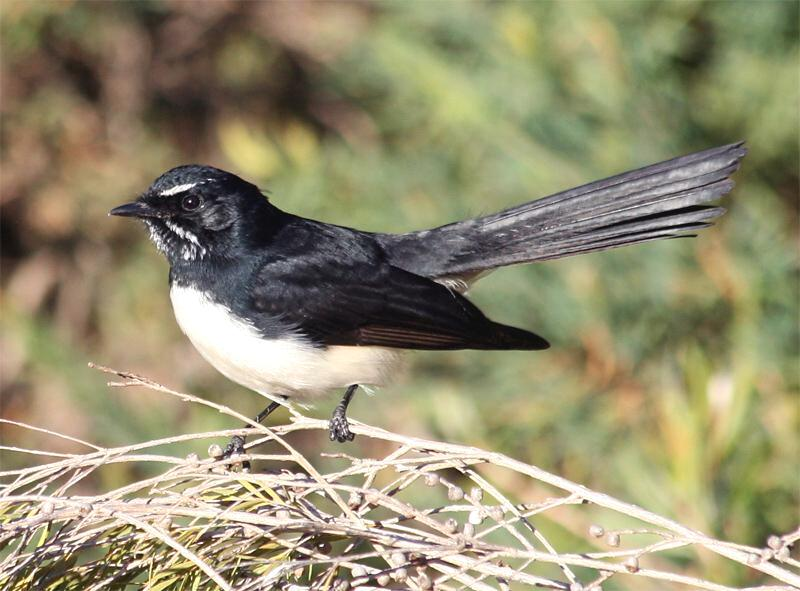
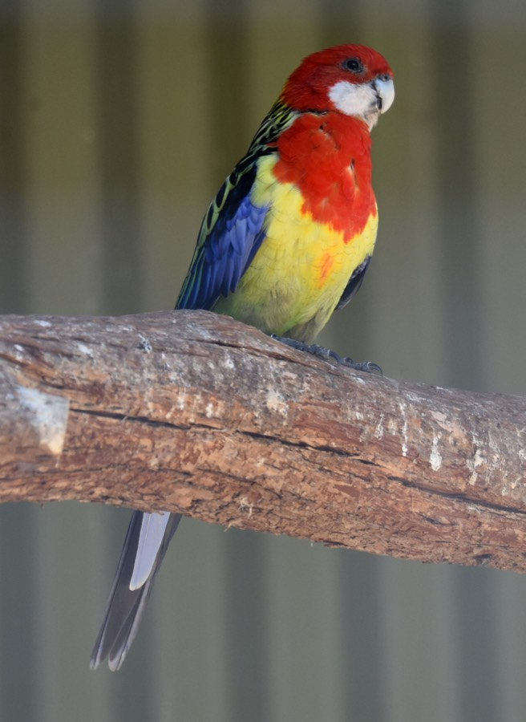

Native Birds
The Willie Wagtail
I picked the Willie Wagtail becuase of its wagging tail. It is black and white, with a white eyebrow.
It lives in woodland, parks and gardens. It catches insects on the ground and in the air.
It builds an open cup nest with grass and spider web. My box is not an ideal nesting box for them.

Why birds need protecting
I can help the enviroment by protecting trees and picking up litter.
I should leave nests alone and keep pets away.
Birds need diffrent homes
Eastern Rosellas nest in tree hollows. Diffrent birds need different homes.

Research: Australian Museum, BirdLife Australia and Canberra Birds.